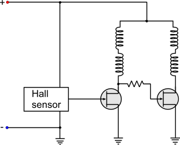
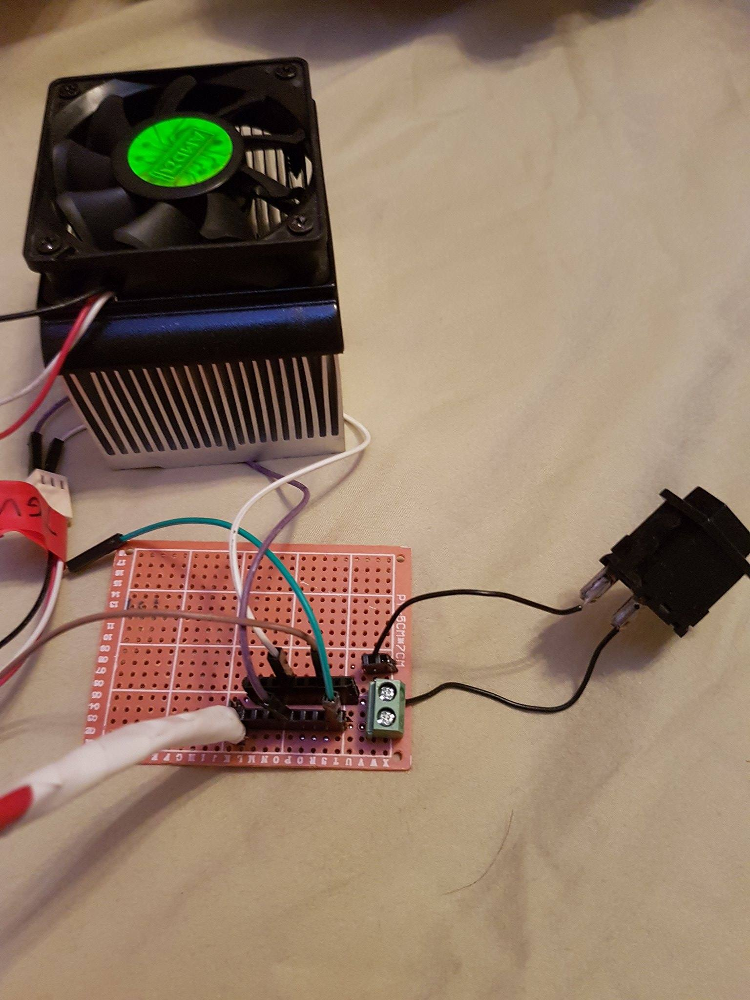

Recently, I've been playing around with old computer power supplies. Naturally, that led me to other components of the computer, namely, the cooling fan. These fans are driven by a brushless DC motor system. This is to achieve a reduced sound and higher efficiency compared to a brushed DC motor system such as those you would see (or hear) in printers, air conditioners and RC cars.
Computer fans can range from very simple to kind-of-simple with 2, 3, and 4 wires coming out of it. The 2 wire configuration is the simplest and this is just power and ground. A third wire is introduced to be able to monitor the speed of the fan. This is done most commonly by using a hall sensor to measure the rotations of the rotors around the commutator. The 4th wire adds PWM control to the fan so that consumers can control the speed of the fan.

A two wire fan circuit. Check out PCB Heaven for more info
How useful are these fans? Under normal operating temperatures, the pi typically reaches ~68 C, and ~80 C when performing calculations or running a video. With the fan, the temperature is quickly lowered to ~37 C. Another use for these fans is for soldering. They create a vaccuum to garner the toxic fumes from the solder.
Soldering fumes are bad for you! They are a mix of lead, and rosin evaporated into a gas.
Always have good ventilation when you solder. I use my PC fans to create a solder fume extractor that I would otherwise, have to buy commercially
like this . I created a tiny switch board for my fans and I had them running! This was a good start but it didnt fully solve the problem as the fumes were merely being diluted. To rectify this I bought some carbon filters and attached them onto my fans. The trade-off is that this lowers the volume of air displaced by the fan but fumes actually become trapped by the carbon filter.
The circuit I used was a simple switch inline to a computer power supply to power the fans. I am a large fan (no pun intended) of modularity, the ability to switch and recombine components. Sometimes, I need the power supply for a different task, or I need the fan to be cooling rather than extracting particulates.
My circuit was simple enough that I didnt need a breadboard. I also wanted my circuit to be more permanent and didn't want to spend time or money making a PCB, so I went with a perf board. Perfboards come in many varieties with copper strips exactly like a breadboard or long strips down the board but they are known traditionally as boards with arrays of little holes punched into them and copper vias surrounding them to create a contact for soldering.
Perfboards are a step behind making an actual PCB that you would see inside any electronic component but I believe that they are more difficult to make. With CAD software out there such as EAGLECAD or Fritzing, making a PCB is very visual. The graphical interfaces allow you to easily create a route and undo it with a simple click of a button. With a perfboard it is more difficult as there isn't this interface. Planning it becomes a lot more tedious with pencil and paper and having to make iterations

My circuit board
For my perfboard I used two rows of header pins to allow multiple fan systems as well as the connection to the power supply. A set-screw hub enable the switch to be inserted and removed at a moments notice.
Now I just need to wait for my fans to come in from the internet (that was a pun)!